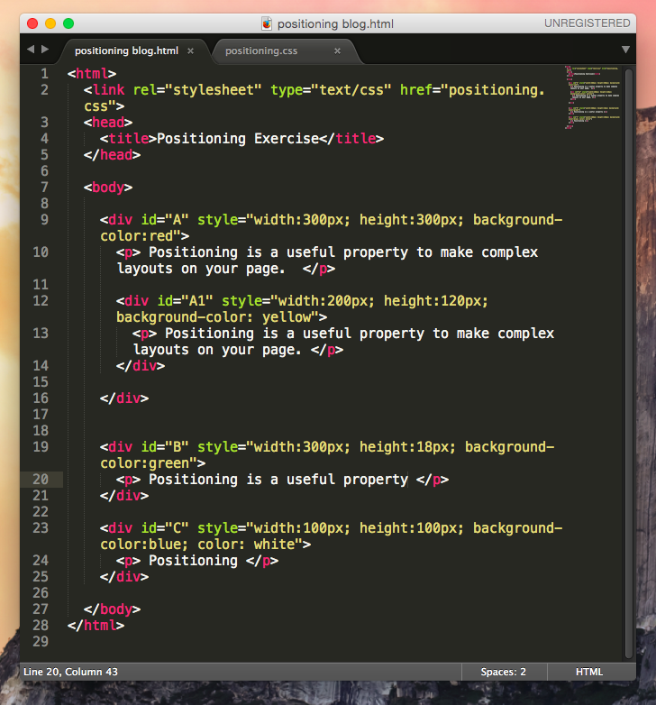
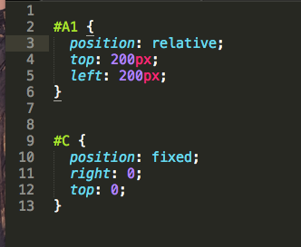
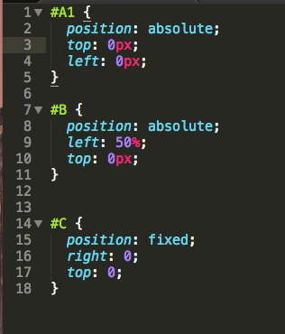
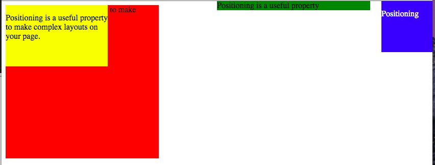
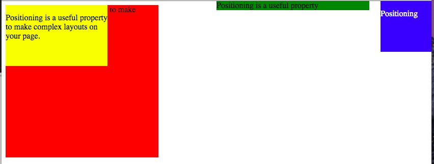
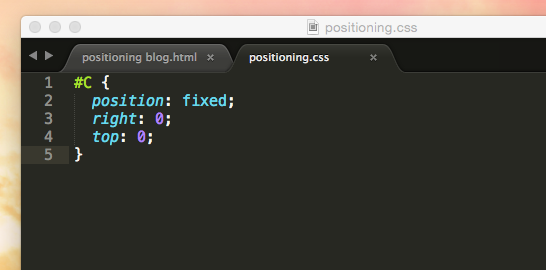
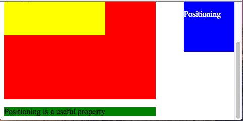
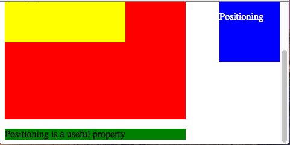

CSS Positioning
What are the differences between static, relative, absolute, and fixed positioning?
Dec 30, 2014
CSS positioning is a useful property to make complex layouts on your page. However, it is not easy to understand how different positioning works, especially for css beginners.
Let's figure out how to position elements using different positioning. CSS has 4 positioning methods: static, relative, absolute, and fixed positioning. I created html file and will go through one by one using screen shots.
1. Static positioning

If you do not specify elements' positioning, HTML elements are positioned static by default, which means the elements occurs where it would normally in the document.
As you see in the html file, I put in order of A first, A1 in A, B, and C. According to the order in html file, each element occurs in the browser. I did not set any position for all those elements.
2. Relative positioning
When you specify position: relative in CSS and do not give any extra properties on the element, relative positioning is the same as static positioning.
However, by using top, right, bottom, and left, you can move the element relative to where it would have occured if it had the static positioning. Let's move the yellow box (A1). 
Even though we moved the yellow box to the new location, the yellow box (A1)is considered that it still occupies its original space.
3. Absolute positioning
When we set position: absolute on an element, the element is positioned in relation to the first parent element whch does not have static positioning. If there's no such element, the element with position: absolute gets positioned relative to .
Let's first set position:absolute on yellow (A1) and green (B) box.


Since there is no parent element which has other than static position, the yellow box and the green box moved based on the browser window.
However, I want to put the yellow box inside of the red box. To do this, we need to use position:relative and position:absolute. When I set relative position on the red box (A), any elements within A -in this case, yellow box (A1)- will move relative to A.
 

As you see in the screen shot, I set relative position on A and absolute position on A1. Contrary to figure ~~, the yellow box is located within the red box. However, the green box is located in the same place.
4. Fixed positioning
When an element has fixed positioning, it is positioned relative to the browser window, and always stays in the same place even though we scroll down the window.
 

Blue square on the top-right side has fixed position, and you can see it does not move even though I scrolled down.
However, fixed positioning is not supported well in some mobile browsers.